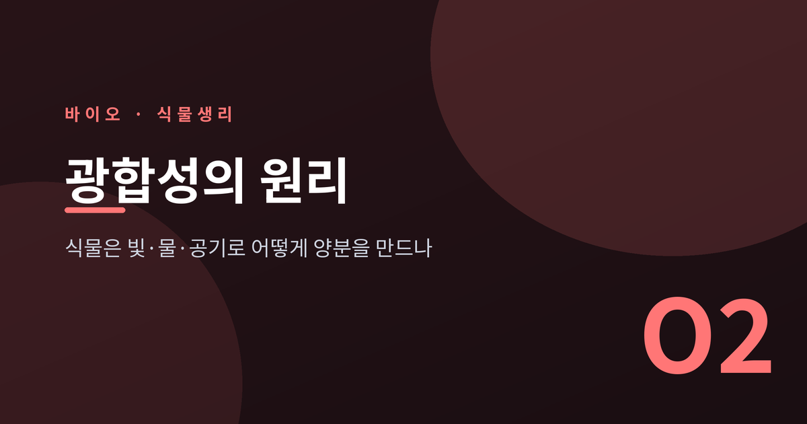
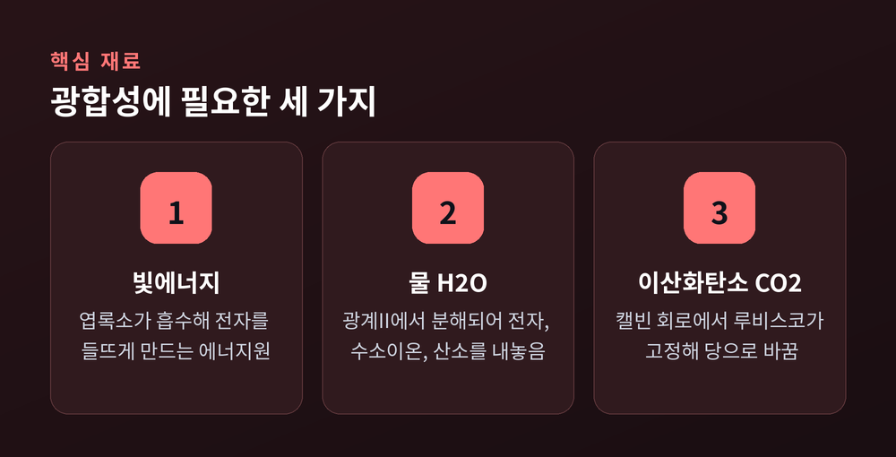
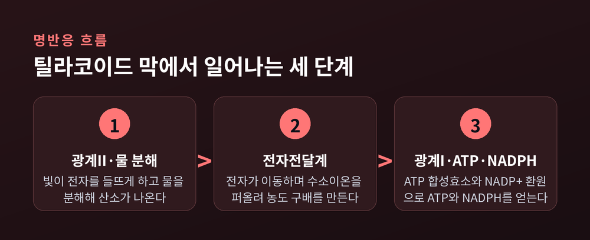
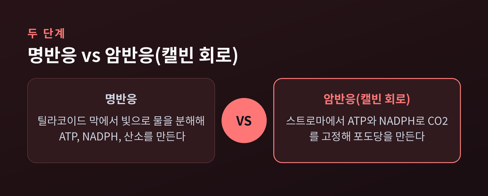
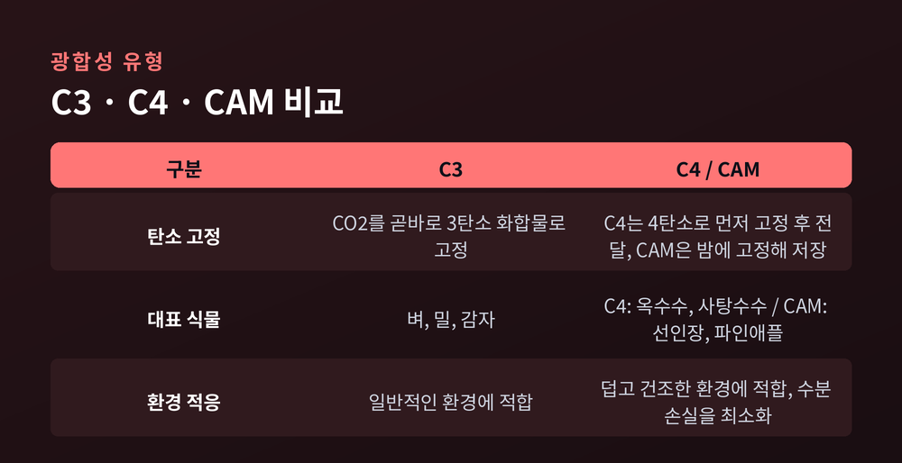

이번 글에서는 광합성이 실제로 어떤 단계를 거쳐 일어나는지 정리해 보겠습니다. 빛을 흡수하는 명반응부터 CO2를 당으로 바꾸는 캘빈 회로, 그리고 식물마다 다른 전략인 C3·C4·CAM까지 다룹니다.
광합성을 한 줄로 요약하면 이렇습니다.
6CO2 + 6H2O + 빛에너지 → C6H12O6 + 6O2
이산화탄소 여섯 분자와 물 여섯 분자가 빛에너지를 받아, 포도당 한 분자와 산소 여섯 분자로 바뀝니다. 식물이 뿌리로 빨아들인 물, 잎으로 들이마신 공기 속 이산화탄소, 그리고 햇빛. 이 세 가지가 만나 양분과 산소를 만드는 셈입니다.
이 반응은 하나의 사건이 아닙니다.
크게 두 단계로 나뉩니다. 빛에너지를 화학에너지로 바꾸는 명반응, 그리고 그 화학에너지로 CO2를 포도당으로 고정하는 암반응(캘빈 회로)입니다. 명반응은 엽록체의 틸라코이드 막에서, 암반응은 그 바깥쪽 스트로마에서 진행됩니다.

명반응의 무대는 틸라코이드 막입니다. 이곳에 엽록소를 품은 두 개의 단백질 복합체, 광계 II와 광계 I이 자리 잡고 있습니다.
과정은 광계 II에서 시작됩니다.
햇빛이 광계 II의 엽록소 분자에 닿으면, 광자의 에너지가 전자 하나를 들뜨게 만들고 이 전자는 원자를 떠납니다. 전자가 빠져나간 자리는 비워둘 수 없습니다. 광계 II는 이 빈자리를 채우기 위해 물 분자를 분해합니다.
물 분자 하나가 분해되면 산소, 수소이온, 전자가 나옵니다. 이 반응을 촉매하는 자리가 망가니즈와 칼슘으로 이루어진 산소 발생 복합체입니다. 우리가 매일 들이마시는 산소는, 사실 이 물 분해의 부산물입니다.
광계 II에서 나온 전자는 곧바로 쓰이지 않습니다. 틸라코이드 막을 따라 늘어선 단백질들, 즉 전자전달계를 거칩니다. 전자가 이 단백질들을 지나며 에너지를 조금씩 내놓고, 이 에너지가 막 펌프를 움직여 수소이온을 스트로마에서 틸라코이드 안쪽으로 퍼 올립니다.
이렇게 안쪽에 수소이온이 쌓이면 막을 사이에 둔 농도 차, 즉 양성자 구배가 만들어집니다. 이 구배가 풀리는 흐름, ATP 합성효소를 통과하는 흐름이 바로 ATP를 만드는 동력입니다. 물이 높은 곳에서 낮은 곳으로 흐르며 수차를 돌리는 것과 비슷한 그림입니다.
전자전달계를 통과한 전자는 다음 정거장인 광계 I로 넘어갑니다. 광계 I은 다시 빛을 흡수해 전자를 한 번 더 밀어 올리고, 이 전자는 최종적으로 NADP+를 NADPH로 바꿉니다. 이렇게 광계 I과 II를 모두 거쳐 ATP와 NADPH를 동시에 만드는 경로를 비순환적 광인산화라고 부릅니다.
명반응이 남기는 것은 세 가지입니다. ATP, NADPH, 그리고 산소. 이 중 ATP와 NADPH는 곧바로 다음 단계, 암반응의 연료로 쓰입니다.

이 모든 과정의 출발점에는 빛을 붙잡는 색소, 엽록소가 있습니다.
식물에는 엽록소 a와 엽록소 b, 두 종류가 함께 있습니다. 엽록소 a는 청색광(430~450nm)과 적색광(665~680nm) 두 영역에서 빛을 잘 흡수합니다. 엽록소 b는 청색광(640~660nm)과 적색-주황광(620~640nm)을 흡수해, 엽록소 a가 놓치는 파장대를 메워줍니다.
두 색소 모두 초록빛 파장대는 상대적으로 덜 흡수합니다. 흡수하지 않고 반사·투과시킨 빛이 우리 눈에 들어오기 때문에, 식물이 초록색으로 보이는 것입니다. 다시 말해 초록색은 식물이 "안 쓰는" 빛의 색입니다.
색소가 흡수한 에너지는 여러 색소 분자를 거쳐가며 전달되다, 마지막에 반응 중심이라 불리는 특정 엽록소 분자에 도달합니다. 바로 여기서 물 분해와 전자 방출이라는 명반응의 첫 사건이 시작됩니다.
빛이 없어도 진행된다고 해서 "암반응"이라 불리지만, 실은 명반응이 만든 ATP와 NADPH가 없으면 한 걸음도 나아가지 못합니다. 무대는 스트로마이고, 흔히 캘빈 회로로 부릅니다.
캘빈 회로는 세 단계로 이루어집니다. 탄소 고정 → 환원 → RuBP 재생입니다.
탄소 고정 단계에서는 루비스코라는 효소가 CO2와 RuBP(5탄소 화합물)를 반응시켜 6탄소 중간체를 만들고, 이는 곧바로 3탄소 화합물 두 개로 쪼개집니다. 공기 중 기체였던 CO2가 여기서 처음으로 유기물의 몸을 갖게 됩니다.
루비스코는 사실 반응 속도가 느리고 효율이 떨어지는 효소로 알려져 있습니다. 식물은 이 약점을 양으로 메웁니다. 그래서 루비스코는 지구상에서 가장 풍부한 단백질로 꼽힙니다. 느리지만, 압도적으로 많습니다.
이어지는 환원 단계에서는 명반응이 보내준 ATP와 NADPH가 3탄소 화합물을 G3P로 바꿉니다. G3P 중 일부는 포도당을 비롯한 탄수화물의 재료가 되고, 나머지는 다시 RuBP로 돌아가 다음 회전을 준비합니다. 포도당 한 분자, 즉 탄소 여섯 개를 확보하려면 이 회로가 여섯 번 돌아야 합니다.

캘빈 회로로 CO2를 고정하는 기본 방식을 C3 광합성이라 부릅니다. 벼, 밀, 감자 같은 대부분의 식물이 여기에 속합니다.
문제는 덥고 건조한 환경입니다. 기공을 열어 CO2를 받아들이는 동안 수분도 함께 날아가기 때문입니다. 옥수수, 사탕수수 같은 식물은 다른 길을 택했습니다. CO2를 먼저 4탄소 화합물로 고정해 저장했다가, 필요할 때 3탄소로 쪼개 캘빈 회로에 공급합니다. 이를 C4 광합성이라 부릅니다. CO2를 미리 농축해 두는 덕분에 광호흡이 줄고, C3 식물보다 효율이 약 50% 가량 높다고 알려져 있습니다.
선인장이나 파인애플 같은 건조지 식물은 한 걸음 더 나아갑니다. CAM 광합성은 시간을 나누는 전략입니다. 밤에 기공을 열어 CO2를 고정해 저장해두고, 낮에는 기공을 닫아 수분 손실을 막은 채 저장해둔 CO2로 캘빈 회로를 돌립니다. 탄소를 붙잡는 시간과 당을 만드는 시간이 아예 분리되어 있는 셈입니다.
세 방식 모두 도착지는 같습니다. 캘빈 회로를 돌려 포도당을 만드는 것. 다만 그곳까지 가는 길이, 사는 환경에 따라 달라졌을 뿐입니다.

광합성은 한 그루 식물의 생존 전략에 그치지 않습니다. 지구 생태계 전체를 떠받치는 근본 과정입니다.
먹이사슬의 맨 아래에는 언제나 광합성 생물이 있습니다. 식물, 남세균, 일부 원생생물이 빛과 물과 CO2로 만든 양분이 직접적으로든 간접적으로든 거의 모든 생물의 에너지원이 됩니다.
산소도 마찬가지입니다. 대기 중 산소의 상당 부분은 광합성, 그중에서도 바다의 조류가 만드는 것으로 추정됩니다. 이렇게 쌓인 산소는 오존층을 이루어 자외선으로부터 생물을 지켜주는 역할까지 합니다. 지구 대기가 지금처럼 약 21%의 산소를 품게 된 것도, 오랜 시간 누적된 광합성의 결과입니다.
탄소 순환에서도 광합성은 한 축을 담당합니다. 광합성이 CO2를 고정하고, 호흡·부패·연소가 다시 CO2를 대기로 돌려보내는 흐름이 반복되며 지구의 탄소 균형이 유지됩니다.
정리하면 이렇습니다.
광합성은 빛으로 물을 쪼개 전자와 에너지를 얻고(명반응), 그 에너지로 공기 중 CO2를 당으로 바꾸는(암반응) 두 단계의 정교한 연쇄 반응입니다. "식물이 빛을 먹고 산다"는 말은, 들여다볼수록 단순한 비유가 아니라 상당히 정확한 설명이라는 생각이 듭니다.
매일 마주치는 초록 잎 한 장 안에서, 이런 반응이 지금 이 순간에도 쉬지 않고 일어나고 있습니다.